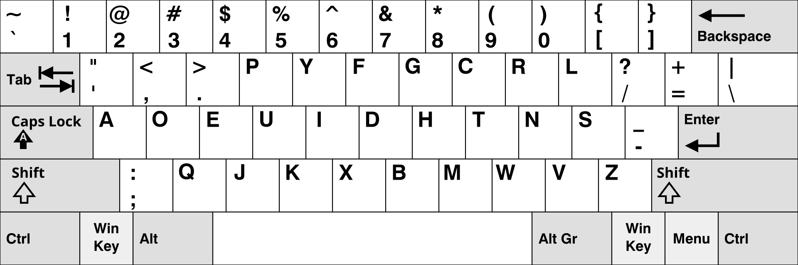

The aforementioned August Dvorak created his own layout, which he named after himself. A major advantage is that all vowels are placed on the home row for the left hand. In English typing, this creates an alternating pattern, with most consonants on the right hand.
A major downside of Dvorak is that it does not allow easy use of Ctrl + ZXCV shortcuts with just the left hand. Some convenient shortcuts available in QWERTY are harder to use because they require both hands.